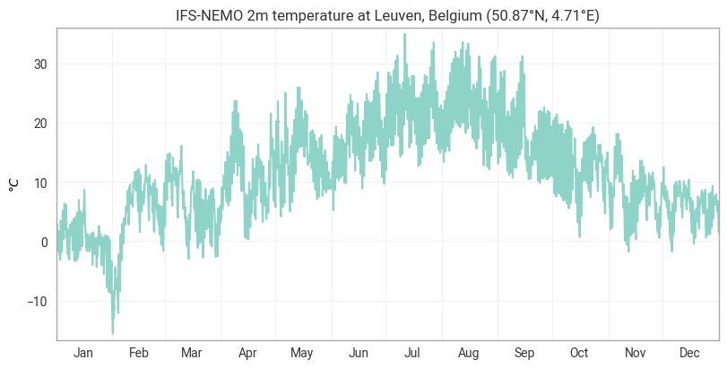
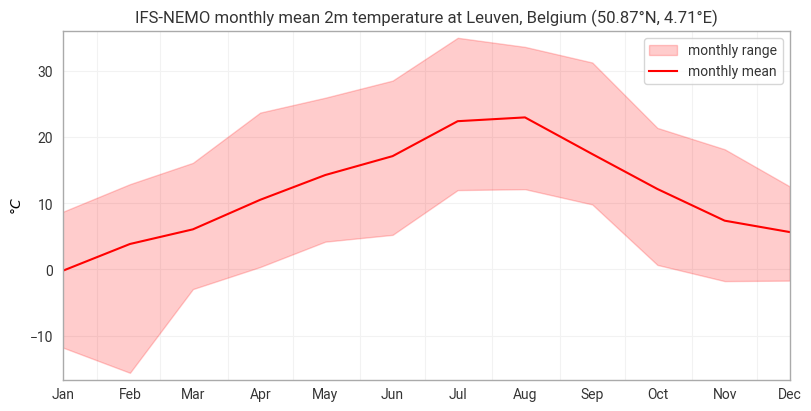
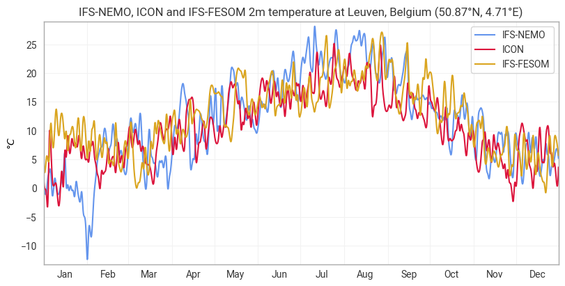

Time series at a single point with earthkit#
This notebook shows how to extract an hourly time series from the Destination Earth Climate DT at a single location (Brussels) and visualise it with earthkit.plots.
What you will learn
How to use Polytope’s
timeseriesfeature to retrieve hourly data efficiently at a single lat/lonHow to compute temporal statistics with
earthkit.transformsHow to build multi-layer time series charts - lines, filled ranges, and multi-model overlays - using the
TimeSeriesclass.
Setup#
This notebook uses the following components of earthkit:


Show code cell source
import earthkit.data as ekd
import earthkit.plots as ekp
from earthkit.plots.temporal import TimeSeries
import earthkit.transforms as ekt
Define the target location#
We pin the coordinates for Brussels once so both the Polytope request and any downstream labels stay consistent.
Show code cell source
LOCATION = [50.85, 4.35]
Retrieve an hourly time series from the Climate DT#
Polytope’s timeseries feature type does server-side extraction at a single point, so only the values for that location are transferred rather than a full global field for every time step. This makes retrieving for example a year of hourly data very fast and lightweight.
The feature dictionary sets type: timeseries and passes the target coordinates. The time_axis: date option tells Polytope to organise the result along the date dimension.
Show code cell source
ifs_nemo_request = {
"activity": "projections", # CMIP activity: SSP scenario projections
"class": "d1", # DestinE data class
"dataset": "climate-dt", # dataset family
"experiment": "ssp3-7.0", # experiment/scenario (middle-of-the-road high emissions)
"generation": "2", # dataset generation
"levtype": "sfc", # vertical level type: surface fields
"date": "20400101/to/20401231", # date range: full year 2040 (Polytope range syntax)
"model": "ifs-nemo", # coupled atmosphere-ocean model
"expver": "0001", # experiment version (operations / research exp.)
"param": "167", # parameter ID: 2 m temperature
"realization": "1", # initial-condition run
"resolution": "standard", # quick-view ('standard') or full ('high') resolution
"stream": "clte", # climate hourly time-step stream
"type": "fc", # forecast fields
"time": "0000/to/2300", # all hours of the day
"feature": { # server-side extraction at a single point
"type" : "timeseries", # feature type: extract a time series
"points": [[LOCATION[0], LOCATION[1]]], # target [lat, lon]
"time_axis": "date", # organise the result along the date dimension
}
}
ifs_nemo = ekd.from_source(
"polytope",
"destination-earth",
ifs_nemo_request,
address="polytope.mn5.apps.dte.destination-earth.eu",
stream=False,
).to_xarray()
2026-06-10 13:01:39 - INFO - Key read from /Users/mavj/.polytopeapirc
2026-06-10 13:01:39 - INFO - Sending request...
{'request': 'activity: projections\n'
'class: d1\n'
'dataset: climate-dt\n'
'date: 20400101/to/20401231\n'
'experiment: ssp3-7.0\n'
"expver: '0001'\n"
'feature:\n'
' points:\n'
' - - 50.85\n'
' - 4.35\n'
' time_axis: date\n'
' type: timeseries\n'
"generation: '2'\n"
'levtype: sfc\n'
'model: ifs-nemo\n'
"param: '167'\n"
"realization: '1'\n"
'resolution: standard\n'
'stream: clte\n'
'time: 0000/to/2300\n'
'type: fc\n',
'verb': 'retrieve'}
2026-06-10 13:01:39 - INFO - Polytope user key found in session cache for user mavj
2026-06-10 13:01:40 - INFO - Request accepted. Please poll ./8af4870f-56ae-4730-9fb8-d20518199271 for status
2026-06-10 13:01:40 - INFO - Polytope user key found in session cache for user mavj
2026-06-10 13:01:40 - INFO - Checking request status (8af4870f-56ae-4730-9fb8-d20518199271)...
2026-06-10 13:01:40 - INFO - The current status of the request is 'queued'
2026-06-10 13:01:40 - INFO - The current status of the request is 'processing'
2026-06-10 13:01:52 - INFO - The current status of the request is 'processed'
Inspect the Dataset#
The result is an xarray Dataset with a single t time dimension covering all 8784 hourly time steps of 2040 (a leap year). The latitude and longitude coordinates reflect the nearest HEALPix cell centre to the requested point.
Show code cell source
ifs_nemo
<xarray.Dataset> Size: 141kB
Dimensions: (latitude: 1, longitude: 1, levelist: 1, number: 1, datetime: 1,
t: 8784)
Coordinates:
* latitude (latitude) float64 8B 50.87
* longitude (longitude) float64 8B 4.714
* levelist (levelist) int64 8B 0
* number (number) int64 8B 0
* datetime (datetime) <U20 80B '2040-12-31 00:00:00Z'
* t (t) datetime64[ns] 70kB 2040-01-01 ... 2040-12-31T23:00:00
Data variables:
2t (latitude, longitude, levelist, number, datetime, t) float64 70kB ...
Attributes: (12/14)
activity: projections
class: d1
dataset: climate-dt
experiment: ssp3-7.0
expver: 0001
generation: 2
... ...
realization: 1
resolution: standard
stream: clte
type: fc
number: 0
Forecast date: 2040-12-31 00:00:00ZHourly line plot#
The TimeSeries class in earthkit-plots has many built-in features to support quick and easy plotting of timeseries data. Here we plot the raw hourly series and group the x-axis ticks by month with frequency="M" and period=True. The title template uses {model!u} to uppercase the model name and {location:%c}, {location:%C} to format the city and country.
Show code cell source
chart = TimeSeries()
chart.line(ifs_nemo, units="celsius")
chart.ylabel("{units}")
chart.title("{model!u} 2m temperature at {location:%c}, {location:%C} ({latitude:%Lt}, {longitude:%Ln})")
chart.xticks(frequency="M", period=True)
chart.show()

Monthly statistics#
The hourly series is noisy at the annual scale. earthkit.transforms provides temporal aggregation functions that work directly on xarray Datasets. We compute three monthly statistics in one step:
monthly_mean— the mean temperature for each calendar monthmonthly_min— the coldest hourly reading in each monthmonthly_max— the warmest hourly reading in each month
These will be used to draw a mean line overlaid on a shaded min–max range.
Show code cell source
monthly_mean = ekt.temporal.monthly_mean(ifs_nemo)
monthly_min = ekt.temporal.monthly_min(ifs_nemo)
monthly_max = ekt.temporal.monthly_max(ifs_nemo)
Monthly mean with min–max range#
chart.fill_between shades the area between two datasets — here the monthly min and max — giving an immediate sense of intra-month variability. The mean line is drawn on top. time_offset="15D" shifts both layers to the middle of each month so the markers sit on the period they represent rather than at the start.
Show code cell source
chart = TimeSeries()
chart.fill_between(monthly_min, monthly_max, color="red", label="monthly range", time_offset="15D", units="celsius")
chart.line(monthly_mean, color="red", time_offset="15D", label="monthly mean", units="celsius")
chart.ylabel("{units}")
chart.title("{model!u} monthly mean 2m temperature at {location:%c}, {location:%C} ({latitude:%Lt}, {longitude:%Ln})")
chart.xticks(frequency="M", period=True)
chart.legend()
chart.show()

Multi-model comparison#
One of the strengths of the Climate DT is that multiple models are run for the same scenario. We can retrieve the same 2040 hourly series for the ICON and IFS-FESOM models by copying the original request dict and swapping the model key - all other fields stay identical.
Note that ICON and IFS-FESOM are served from the LUMI endpoint rather than MN5, requiring a small change to the address key.
Show code cell source
icon_request = ifs_nemo_request.copy()
icon_request["model"] = "icon"
icon = ekd.from_source(
"polytope",
"destination-earth",
icon_request,
address="polytope.lumi.apps.dte.destination-earth.eu",
stream=False,
).to_xarray()
ifs_fesom_request = ifs_nemo_request.copy()
ifs_fesom_request["model"] = "ifs-fesom"
ifs_fesom = ekd.from_source(
"polytope",
"destination-earth",
ifs_fesom_request,
address="polytope.lumi.apps.dte.destination-earth.eu",
stream=False,
).to_xarray()
2026-06-10 13:01:54 - INFO - Key read from /Users/mavj/.polytopeapirc
2026-06-10 13:01:54 - INFO - Sending request...
{'request': 'activity: projections\n'
'class: d1\n'
'dataset: climate-dt\n'
'date: 20400101/to/20401231\n'
'experiment: ssp3-7.0\n'
"expver: '0001'\n"
'feature:\n'
' points:\n'
' - - 50.85\n'
' - 4.35\n'
' time_axis: date\n'
' type: timeseries\n'
"generation: '2'\n"
'levtype: sfc\n'
'model: icon\n'
"param: '167'\n"
"realization: '1'\n"
'resolution: standard\n'
'stream: clte\n'
'time: 0000/to/2300\n'
'type: fc\n',
'verb': 'retrieve'}
2026-06-10 13:01:54 - INFO - Polytope user key found in session cache for user mavj
2026-06-10 13:01:55 - INFO - Request accepted. Please poll ./306596cc-7f7d-4ae7-9762-e7ab8c055377 for status
2026-06-10 13:01:55 - INFO - Polytope user key found in session cache for user mavj
2026-06-10 13:01:55 - INFO - Checking request status (306596cc-7f7d-4ae7-9762-e7ab8c055377)...
2026-06-10 13:01:55 - INFO - The current status of the request is 'queued'
2026-06-10 13:01:55 - INFO - The current status of the request is 'processing'
2026-06-10 13:02:06 - INFO - The current status of the request is 'processed'
2026-06-10 13:02:06 - INFO - Key read from /Users/mavj/.polytopeapirc
2026-06-10 13:02:06 - INFO - Sending request...
{'request': 'activity: projections\n'
'class: d1\n'
'dataset: climate-dt\n'
'date: 20400101/to/20401231\n'
'experiment: ssp3-7.0\n'
"expver: '0001'\n"
'feature:\n'
' points:\n'
' - - 50.85\n'
' - 4.35\n'
' time_axis: date\n'
' type: timeseries\n'
"generation: '2'\n"
'levtype: sfc\n'
'model: ifs-fesom\n'
"param: '167'\n"
"realization: '1'\n"
'resolution: standard\n'
'stream: clte\n'
'time: 0000/to/2300\n'
'type: fc\n',
'verb': 'retrieve'}
2026-06-10 13:02:06 - INFO - Polytope user key found in session cache for user mavj
2026-06-10 13:02:07 - INFO - Request accepted. Please poll ./a6729ae0-1954-4096-85d0-6174e79d7f26 for status
2026-06-10 13:02:07 - INFO - Polytope user key found in session cache for user mavj
2026-06-10 13:02:07 - INFO - Checking request status (a6729ae0-1954-4096-85d0-6174e79d7f26)...
2026-06-10 13:02:07 - INFO - The current status of the request is 'queued'
2026-06-10 13:02:07 - INFO - The current status of the request is 'processing'
2026-06-10 13:02:19 - INFO - The current status of the request is 'processed'
Overlay all three models#
We loop over the three datasets and call chart.line once per model, adding each as a separate layer on the same axes. drawstyle="spline" smooths the daily mean lines so the seasonal signal is easy to compare across models. The {model!u} label placeholder is resolved per-dataset, so the legend entries are named automatically.
Show code cell source
chart = TimeSeries()
COLORS = ["cornflowerblue", "crimson", "goldenrod"]
MODELS = [ifs_nemo, icon, ifs_fesom]
for color, data in zip(COLORS, MODELS):
chart.line(
ekt.temporal.daily_mean(data),
label="{model!u}",
color=color,
units="celsius",
drawstyle="spline",
)
chart.ylabel("{units}")
chart.title("{model!u} 2m temperature at {location:%c}, {location:%C} ({latitude:%Lt}, {longitude:%Ln})")
chart.xticks(frequency="M", period=True)
chart.legend()
chart.show()
